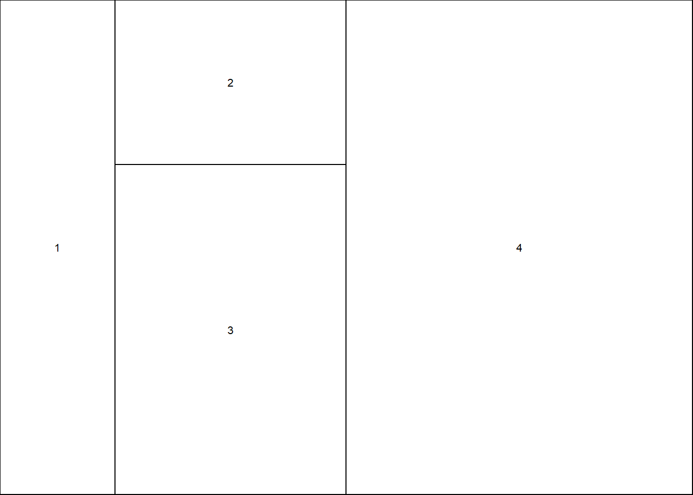

画图
##基础画图
aq <- read.csv('D:/studyr/workpath/Rtraining/aq.csv')
plot(aq$Temp)plot(x=aq$Temp,y=aq$Ozone)plot(x=aq$Temp,y=aq$Ozone,pch=16,col='blue')#library(beginr)
#plotpch(3)#查询标记
#colors()#查询颜色循环及判断
x<-1
if(x>0){
print("positive")
}else{
print("zero or negative")
}## [1] "positive"x1 <- ifelse(x>0, "positive","zero or negative")
plot(x=aq$Temp,y=aq$Ozone,type="l", #type选点还是线各种
pch = ifelse(aq$Temp < 70,8,3),
xlim=c(50,100),ylim=c(30,50),
xlab="tem",ylab="ozone",
col = ifelse(aq$ozone > 100, "red","blue"),
cex = ifelse(aq$Solar.R>200,2,1))练习2
zs <- read.csv("D:/studyr/workpath/Rtraining/zs1.csv")
plot(x =zs$x,y=zs$y1,type="l",col="red",
xlab = "Date",
ylab = "Concentration",
ylim = c(120,160))
lines(x =zs$x,y=zs$y2,type="l",col="blue",
ylim = c(120,160))#polygon(c(zs$x[1:100],zs$x[100:1]),c(zs))多边形涂色
y <- read.csv("D:/studyr/workpath/Rtraining/zs1.csv")
y_green <- c(0, apply(y[, 2:3], 1, max), 0)#0是让线的起点到原点位置
y_pink <- c(0, y$y2, 0)
y_white <- c(0, apply(y[, 2:3], 1, min), 0)
x <- c(y$x[1], y$x, y$x[nrow(y)])
plot(y$x, y$y2, type="n", ylim = c(120, 160), xlab = "x", ylab = "y")
polygon(x = x, y = y_green, col = "lightgreen", border = NA)
polygon(x = x, y = y_pink, col = "pink", border = NA)
polygon(x = x, y = y_white, col = "white", border = NA)
lines(y$x, y$y2)
lines(y$x, y$y1, lty = 2, col="blue1")
box()#加边框箱式图及直方图
#箱式图
boxplot(aq$Ozone ~ aq$Month,horizontal = TRUE,col="pink",outline=FALSE)#直方图
hist(aq$Ozone,freq = FALSE)
lines(density(na.omit(aq$Ozone)))拼图
plot(aq$Temp,aq$Ozone,pch=16,col="blue",ylim=c(0,200),
xlab="",ylab="",axes=FALSE)
axis(1)
axis(2)
par(new=TRUE)
par(mfrow=c(3,2))#margin调边距
for(i in 2:5){
plot(aq$Temp,aq[,i])
}layout(mat=matrix(c(1,1,2,3,4,4),nrow=2),widths = c(1,2,3),heights = c(1,2))layout.show(4)
for(i in 2:5){
plot(aq$Temp,aq[,i])
}par(mfrow=c(2,1))#进行分画布画图
dev.off()#终止分割图## null device
## 1